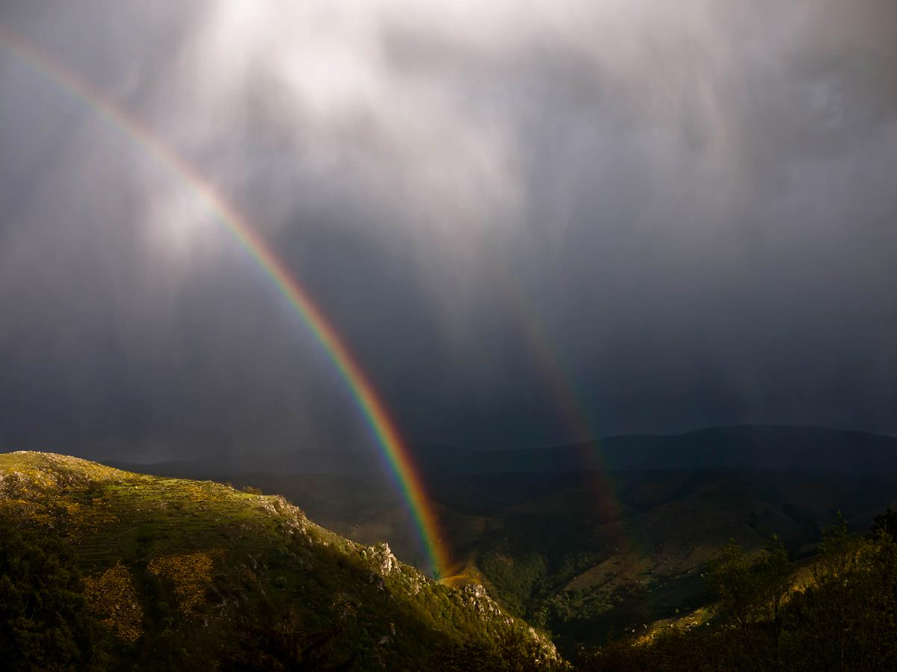
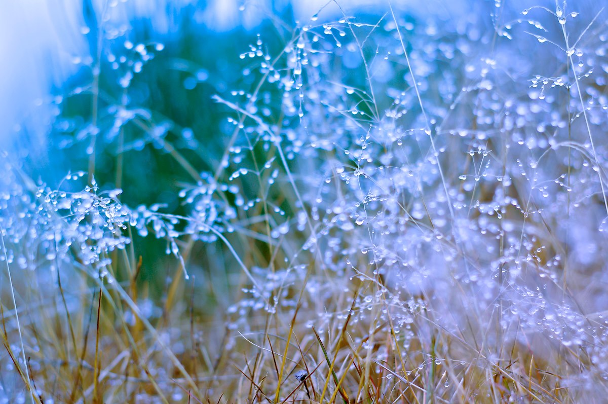
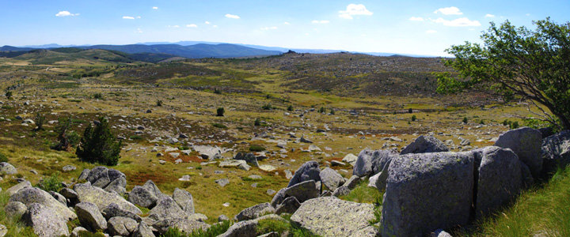

Petite enfance
- 5 micro-crèches de 2 mois et demi à 5 ans, gérées par Trait d'Union
- Pont de Montvert, Ventalon, Sainte Croix, Saint Étienne, Vialas
- Accueils de loisirs Méli Mélo de 3 à 12 ans
Dix-neuf communes et les services qui les relient : démarches, transports, petite enfance, santé, déchets, logement. Suivez le sentier.

Les services les plus demandés, comme des panneaux au départ d'un sentier.

Des chauffeurs bénévoles sont recherchés pour conduire les habitants à leurs rendez-vous médicaux.

Permanences au Collet de Dèze, à Saint Étienne Vallée Française, à Florac et à Villefort.
Séances de l'année 2026.
Le Vent des Bancels et le bulletin communautaire, à feuilleter en ligne. Tous les numéros depuis le n°94.
Photographies d'Émilie Reydon. Accéder aux galeries






 Le Vent des Bancels n°131Feuilleter
Le Vent des Bancels n°131Feuilleter Le Vent des Bancels n°130Feuilleter
Le Vent des Bancels n°130Feuilleter Bulletin communautaire n°1Feuilleter
Bulletin communautaire n°1Feuilleter